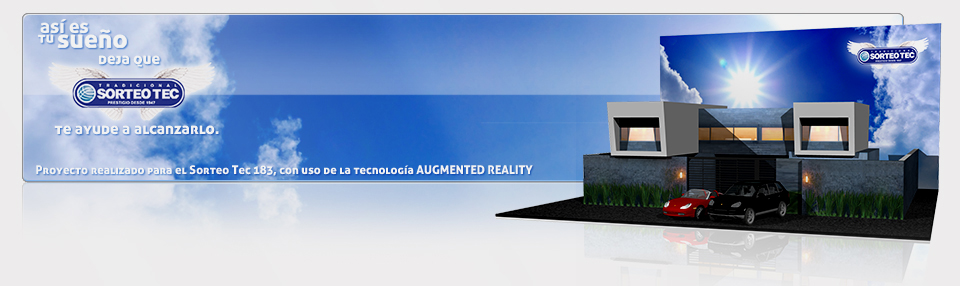
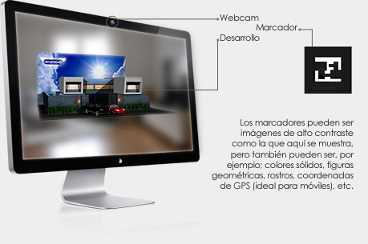

¿ Qué es Augmented Reality?También conocica como “Realidad Aumentada” en español (Aunque no se le puede denominar así en proyectos comerciales ya que en el IMPI el nombre está registrado como marca privada). Es un método de interacción con el equipo de cómputo donde se hace uso de una webcam que representa la realidad y la imagen que se proyecta en la pantalla tendrá una característica adicional que puede ser desde una imagen fija hasta un modelo en 3D animado, el cual se posiciona en el lugar donde es detectado un marcador. Algunas de sus principales características son:
En éste ejemplo tenemos al proyecto para el 183ª Sorteo Tec, para el cual se realizó un desarrollo de Augmented Reality que mediante el uso de un marcador muestra un modelo del primer premio; la residencia en Nvo. León. En el modelo se puede apreciar la arquitectura de la residencia, así como los dos autos Porsche que incluye. El proyecto fué desarrollado en Flash.® (ActionScript 3) para que pudiera ser accesible mediante cualquier navegador web a travéz del plugin. Descargar marcador para el ejemplo Ver el ejemplo
|